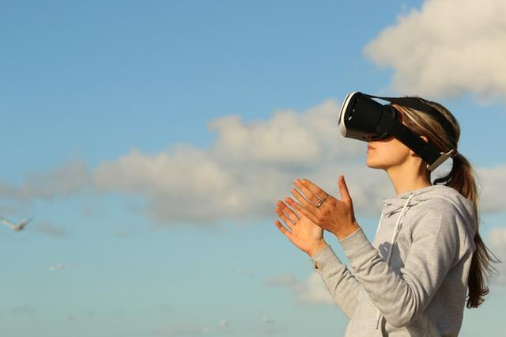

Augmented Reality & Virtual Reality
Augmented Reality en Virtual Reality worden gedaan, door dingen toe te voegen aan de echte wereld, of door de echte wereld na te bootsen. Bij Augmented Reality wordt de gebruiker in een omgeving geplaatst, die op de echte wereld lijkt of juist niet. Wel lijkt het echt, doordat het op het gezichtsverld van de gebruiker wordt geplaatst. Bij Virtual Reality worden er juist driedimensionale afbeeldingen in de echt wereld geplaatst. Zo krijgt men het idee dat ze echt zijn.
Concepten die door mij zijn bedacht
Voor drie verschillende onderwerpen heb ik concepten bedacht, waarbij gebruik wordt gemaakt van Augmented of Virtual Reality. Deze worden hieronder uitgelegd en weergegeven met afbeeldingen.
Virtuele Therapie
Wanneer er een persoon is die een angst niet heeft kunnen overwinnen, kan dit problemen veroorzaken bij het functioneren. Door de trauma's kan de persoon er een Post Traumatische Stress Storing aan overhouden en kan het leven steeds moeiljker en moeilijker worden. Hiervoor zijn verschillende soorten therapieën ontwikkeld, maar niet iedereen durft dit te doen. Dit probleem kan opgelost worden door een virtuele therapeut die er is voor de gebruiker wanneer hij of zij het nodig heeft. Persoonlijk denk ik dat het het best zou zijn, als er contact gemaakt wordt met een echt persoon die kan praten met de gebruiker om zo te helpen met de problemen.
Kleuren in 3D
 Voor de jeugd van tegenwoordig bestaat het leven bijna alleen maar uit iPads en Smartphones helaas. Er wordt vrij weinig gedaan om de fijne motoriek van de kinderen te kunnen ontwikkelen. Door gebruik te maken van Augmented reality, kan dit gedaan worden! Ook nog eens door middel van een iPad of een Smartphone.
Voor de jeugd van tegenwoordig bestaat het leven bijna alleen maar uit iPads en Smartphones helaas. Er wordt vrij weinig gedaan om de fijne motoriek van de kinderen te kunnen ontwikkelen. Door gebruik te maken van Augmented reality, kan dit gedaan worden! Ook nog eens door middel van een iPad of een Smartphone.
Een belangrijke activiteit om de fijne motoriek van kinderen te ontwikkelen, is kleuren. Het kleuren binnen de lijntjes en met verschilende kleuren, laat ze goed nadenken en zet ze aan het werk. Dit kan samengevoegd worden met Augmented Reality en de vormen die ingekleurd zijn door de kinderen, kunnen op een leuke manier zichtbaar worden op de iPad/Smartphone. Zo wordt er gewerkt aan de fijne motoriek en is het niet saai voor de kinderen.
Parkeren voor Dummies
 Parkeren, het is een van de problemen die bijna iedere bestuurder ervaart. Af en toe lijkt het net of je in een vrachtwagen rijdt en is het onmogeljik om in dat kleine vakje te passen. Vaak is dit wel mogelijk, maar door het minimale zicht wat we meestal hebben, llijkt het onmogelijk.
Parkeren, het is een van de problemen die bijna iedere bestuurder ervaart. Af en toe lijkt het net of je in een vrachtwagen rijdt en is het onmogeljik om in dat kleine vakje te passen. Vaak is dit wel mogelijk, maar door het minimale zicht wat we meestal hebben, llijkt het onmogelijk.
Door gebruik te maken van Augmented Reality, kunnen de auto en het parkeervak via het de voorruit in de auto gezien worden en kan het parkeren makkelijker gemaakt worden voor de bestuurder.
Onderzoek
Een bekend spel wat gebruik maakt van Augmented Reality, is Pokémon Go! Dit spel was ruim twee jaar geleden een enorme rage onder de wereldbevolking. Er waren zelfs mensen die speciaal voor het spel naar bepaalde delen van de wereld reisden, om een soort Pokémon te kunnen vangen.
Bij dit spel wordt er gebruik gemaakt van de realiteit, in combinatie met animaties op het beeldscherm van Smartphones. Het spel is door The Pokémon Company op de markt gebracht en was een enorm succes. Helaas kon het door serverproblemen niet over heel de wereld uitgebracht worden.
Bij Virtual Reality word je meer afgesloten van de echte wereld, er wordt altijd gebruik gemaakt van een VR-bril. Wanneer je deze opdoet ben je in een totaal andere wereld, maar lijkt het echt omdat dat het enige is wat je op dat moment kunt zien.
Het wordt wel eens gebruikt voor trainingsdoeleinden. Wanneer de bril opgedaan wordt, stap je in de virtuele trainingswereld en kan je oefenen voor bijvoorbeeld je werk als politieagent.
Reflectie
Dit onderwerp vond ik ook heel leuk, maar ik zou er zelf eerlijk gezegd niet iets mee willen doen. Dit omdat ik vind dat het onderwerp al heel uitgebreid wordt gebruikt. Onder de samenleving, in spellen en in andere verschillende ontwikkelingen. Hierom denk ik dat het wat moeilijker is om bij dit onderwerp met innovatieve ideeën te komen. Bijna alles wat gedaan kan worden, is al gedaan. Verbeteringen zijn natuurlijk wel altijd goed om te doen.
Zelf denk ik dat er in de toekomst steeds meer gedaan zal worden met AR & VR. Vooral met de jeugd van tegenwoordig, die het kleuren in een kleurboek saai vindt.